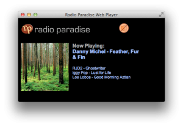
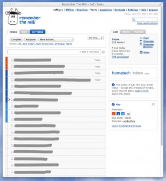

Making Browsers Better for Web Apps
I have two distinct use cases for web browsers: browsing and web apps. I contend browsers are fine for browsing, but are clumsy for web apps. This blog proposes how to improve the web app use case.
Case 1: Browsing. I interact with a variety of web sites for a variety of purposes. The common activities here are searching, moving between pages, filling out forms. What is most important to me are rapid navigation, working with multiple pages, even advanced things like saving images to disk.
Case 2: Web Apps. These I use in very limited ways: aside from an authentication flow, I'm often interacting with a single page. Browser features like tabs and search bars are inappropriate and confusing. I want these to feel as much like a native apps as possible.
A web app could be something as simple as embedding a little flash player. I've done this for the Radio Paradise player, a little station that I like a lot.
A better web app example is Google Calendar. I don't want forward/back buttons, URL bar, or tabs. I want right click to either do nothing, or something very app-specific (new appointment?). I want "quit" to just quit Google Calendar and not affect any my other work.
In my day-to-day life as a Mac user I use Fluid to get pretty close to what I want. With Fluid I get one window per site, a so-called site-specific browser (SSB). Fluid removes a lot of the browser features, like bookmarks, URL bar, or the search bar, because it doesn't need them. The app get its own top-level icon so it can be in my dock. It's great, I totally endorse Fluid.
Here's a screenshot of another web app that I love: Remember the Milk. Excellent web app. Just don't clutter it up with all that browser junk.

But it's tricky enough to get this working that I can't recommend it to "normal" users. Here are two examples.
The definition of what URL's make up this app can be a bit fussy, and changes over time. URL's in the app open need to open in the same window, outside the app should open a new full-fledged browser. This bit me when I started using Google's two-factor authentication. This additional step in the auth flow, implemented with a new URL, spawned a new browser. Since Fluid uses Safari, and my default browser is Chrome, the auth cookie got set in the wrong browser, effectively breaking authentication altogether.
The second complication is finding a good app icon. This isn't as acute as broken authentication, but don't trivialize good icons either. Fluid's default is to use the favicon (32x32 pixels I belive) which is just lousy. Luckily people have sets of icons they share on sites like Flickr, but you have to find them, unzip, etc. That's doable for me, but not for everyone.
I'm glad to see Chrome and Firefox making this easier, albeit slowly. Chrome has the "Make Application Shortcut" feature, but it's been Windows only for a long time. (hint hint Chrome team).
Here's a neat idea: a crowdsourced recipes database for Fluid that would encapsulate all the good settings to make it work and keep them current. As the apps change, the recipes would update and your local apps would get those updates. You could even take that one step further to enable features like limiting geometries and font sizes to presets that make sense for that app. For example, Remember the Milk (screenshot above) looks good tall and narrow. Fluid does seem to have a premium feature to allow Userscripts and Userstyles, which could help a bit.
Hmm, maybe I'll see if the Fluid guys want to work on something together on this.
Comments
Comments powered by Disqus